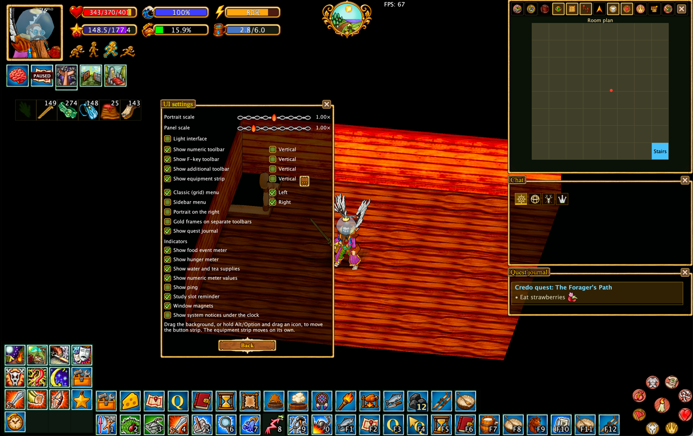
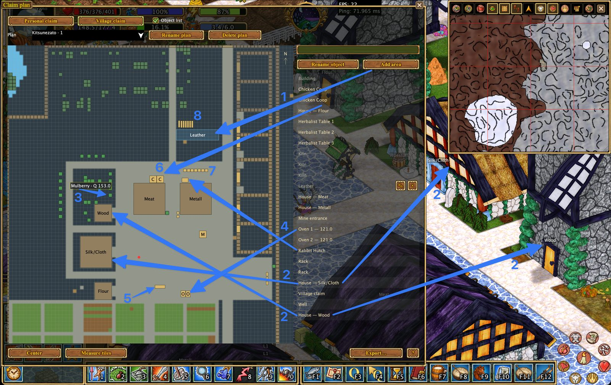
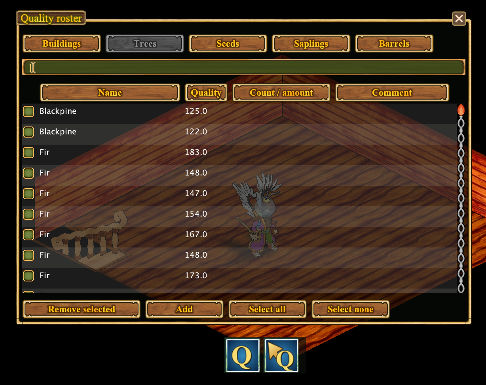
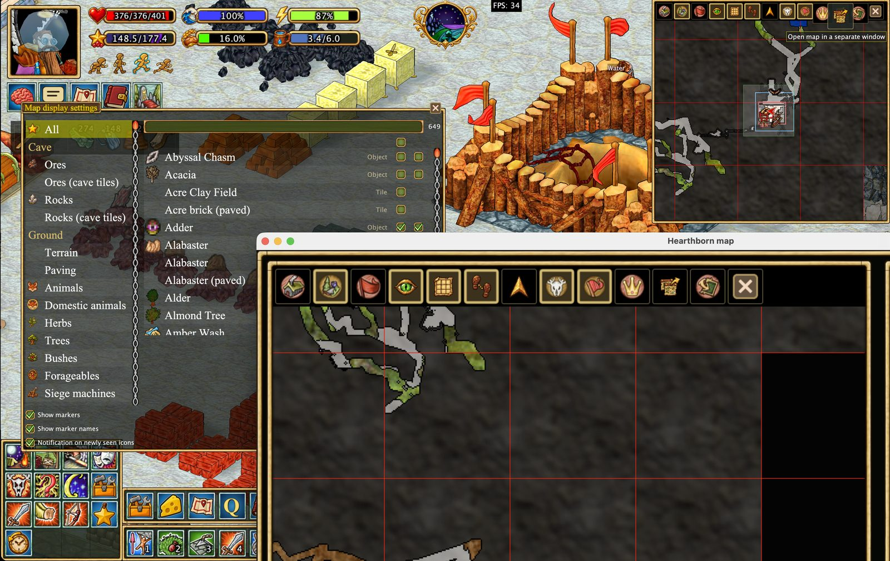
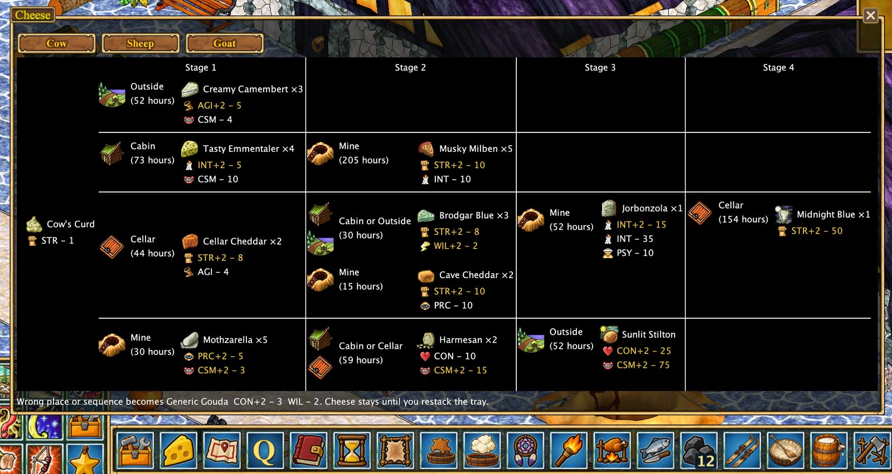
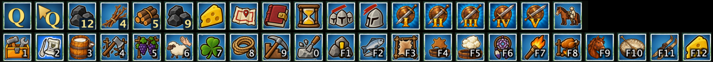
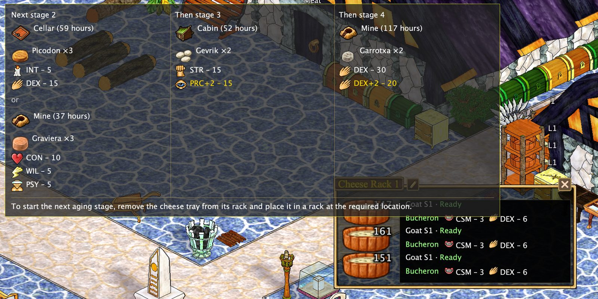
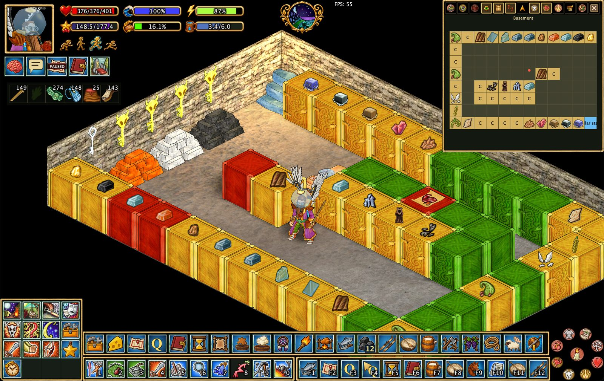

Hearthborn Client¶
Пользовательский клиент для Haven & Hearth
Планируйте деревню. Упрощайте производство. Исследуйте мир с более удобными инструментами.
Возможности · Документация · Конфиденциальность · Поддержка разработки · Скриншоты
Hearthborn создан на основе оригинального (vanilla) клиента Haven & Hearth. Это независимый неофициальный клиент, который делает повседневную игру удобнее благодаря настраиваемому интерфейсу и инструментам для управления деревней, производства, исследования мира, шахт и многого другого.
Языки: английский и русский (примерно 98% интерфейса клиента переведено на русский) · Технологии: Java 22 / Apache Ant
Возможности¶
Каждая возможность подробно описана в отдельном руководстве с иллюстрациями.
🎛️ Интерфейс и управление¶
- Переработанный интерфейс — классическое меню 4×4 или боковое меню, перемещаемые панели инструментов, привязка окон, зеркальное расположение элементов интерфейса и компактный режим.
- Переработанный поиск действий — избранное, история, сведения о рецептах и поиск по ингредиентам.
⚙️ Производство и управление¶
- Журнал качества — запись качества объектов и отображение известных значений на планах.
- Журнал животных (Cattle Roster) — обновлённый интерфейс учёта животных и автоматическое удаление забитых животных.
- Планировщик деревни и владений — автоматическое нанесение обнаруженных построек на план, названия областей, измерение клеток, экспорт и импорт планов.
- Помощник сыровара — стадии созревания сыров, подписи на стеллажах и схема развития сыров.
- Автоматические таймеры — таймеры производства, сыров, осадных сооружений, владений и ручные таймеры.
- Отображение складов и производства — содержимое шкафов, распознавание складируемых материалов и подписи объектов.
- Автоматизация и Xtensions — вспомогательные команды для топлива, производственных станций, растений, животных и других повторяющихся задач.
🗺️ Навигация и исследование¶
- Улучшенный поиск пути — включён по умолчанию, с дополнительной возможностью навигации верхом.
- Карта и экспорт — перенос карт между клиентами, экспорт изображений и отдельных тайлов.
- Маршрут сессии — отображение маршрута текущей сессии без его записи на диск.
- Значки и настройки карты — дополнительные значки, звуки животных и переработанные элементы управления картой.
- Триангуляция метеоритов — определение примерной области падения метеорита по наблюдениям Star Gaze.
⛏️ Шахты и бой¶
- Переосмысленный «Сапёр» — отметки клеток пещеры, изучение подсказок от пыли и настройки безопасности шахт.
- Помощь в бою — автоматизация боя с животными и компактный боевой интерфейс.
Начало работы¶
Hearthborn — неофициальный пользовательский клиент для Haven & Hearth. Инструкции по установке и запуску появятся здесь, когда будет доступен проверенный дистрибутив.
Чтобы познакомиться с доступными возможностями и управлением, начните с руководства по интерфейсу и руководства по автоматизации.
Документация¶
Подробные руководства со скриншотами доступны в разделах документации. Начните с руководства по интерфейсу или хранилищам и складам, либо воспользуйтесь ссылками на отдельные функции выше.
Примечание: таймеры, данные о качестве, карты и автоматизация опираются на информацию, которую клиент действительно получил во время игры. Они не раскрывают неизведанные сведения и не гарантируют успешного выполнения действий.
Конфиденциальность¶
Hearthborn не отправляет ваши данные сторонним сервисам. Клиент передаёт только данные, необходимые для подключения и игры, на официальные серверы Haven & Hearth.
Поддержка разработки¶
Hearthborn бесплатен для всех. Пожертвования добровольны и помогают продолжать разработку, исправлять ошибки и добавлять новые функции. Они не открывают эксклюзивных возможностей и не дают игровых преимуществ.
❤️ Поддержать Hearthborn на Buy Me a Coffee
Авторы и лицензия¶
Hearthborn — независимый проект на основе клиента Haven & Hearth. Права на оригинальную игру и клиент принадлежат их авторам. Условия исходной лицензии приведены в оригинальном проекте.
Скриншоты¶
Краткий обзор интерфейса и инструментов Hearthborn. Нажмите на название функции, чтобы открыть подробное руководство.
| Настраиваемый интерфейс | Планировщик деревни и владений |
|---|---|
 |
 |
| Журнал качества | Значки и настройки карты |
 |
 |
| Сыроварение | Автоматизация и Xtensions |
 |
 |
| Созревание сыров на стеллажах | Содержимое шкафов |
 |
 |